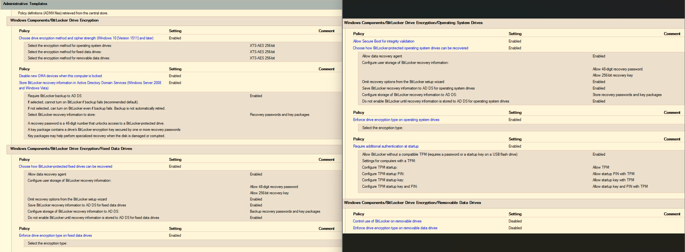
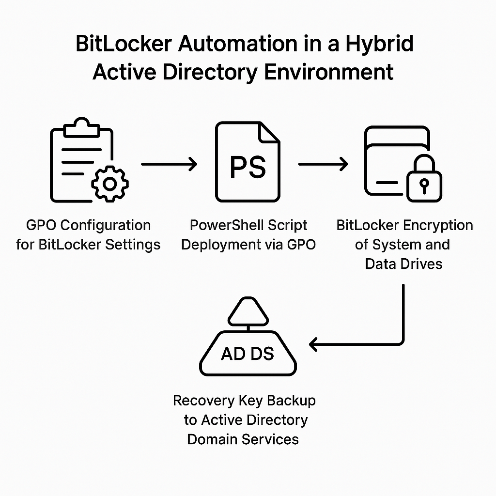

Challenge
Automatically encrypt over 1,000 existing Windows devices in a hybrid Active Directory environment using GPOs — with zero user interaction, no downtime, and no disruption. Devices included both single-drive systems and those with additional data volumes. Removable drives (e.g., USB flash drives) were handled dynamically, encrypted based on the behavior of the system drive to ensure consistent security.
Tools & Technologies
- Active Directory Domain Services (AD DS)
- Group Policy Objects (GPO)
- PowerShell scripting
Implementation
The rollout was executed in three stages:
- Policy Preparation: A GPO was deployed to configure BitLocker settings for system, data, and removable drives before any encryption began.
- System Drive Encryption: A second GPO triggered a PowerShell script
EnableBitlockerSystemDriveC.ps1that:- Checked BitLocker status
- Enabled encryption on the system drive
- Detected TPM availability
- Backed up recovery keys to Active Directory for Helpdesk access
- Data & Removable Drive Encryption: A third GPO deployed
EnableBitlockerDataDriveD.ps1, which:- Detected and encrypted data drives (D:, E:, F:)
- Included removable drives like USBs
- Applied the same encryption logic as the system drive
BitLocker GPO Configuration
Below is a screenshot of the GPO settings used to enforce encryption and recovery key storage:
Automation Flow Diagram
This diagram illustrates the end-to-end automation process:
Impact
- Encrypted over 1,000 devices without user interaction
- Zero downtime during deployment
- Fully automated recovery key storage in Active Directory
- Improved compliance and reduced support overhead